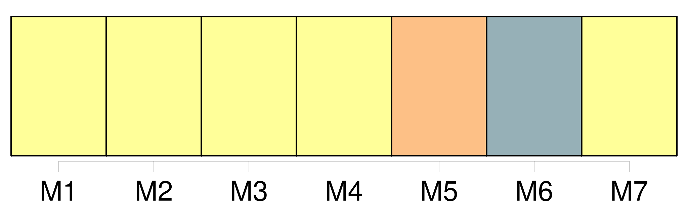

Longueur nb maillons : 33 mentions |
  |
En attendant, ils apprennent à mettre de côté les pensées dangereuses pour le jour où leurs poisons seront évaporés : la raison a le temps, elle les retrouvera à son heure qui ne coïncide pas avec l'heure [des hommes] [2 phrases]
Ils montrent tant de bons tours, de proverbes, de figures que je ne sais même plus si, à force de silences avertis par les métaphores du sommeil, d'entretiens avec les passants attardés sur les places, dans les casernes, les débits, les usines, je retrouverai le sens des paroles droites et des simples inventions [des hommes] [28 phrases]
Voici ce que nous savons : [les hommes] ne vivent pas comme un homme devrait vivre. [47 phrases] Dans ces cuves sonores pleines d'éclairs blancs, [les hommes] vont s'oublier : [ils] sortent hébétés par les songes et [vont] se perdre dans les cubes où se déroule ce que M. Bergson ose encore appeler la vie, avec ce robinet éternel dans un coin.
Nous faisons comme [les hommes] [39 phrases] Dans ces années molles où le dégoût, où l'impatience d'être [des hommes] montaient dans tous les corps comme des accès de fièvre, une force centrifuge irrésistible attirait les hommes les moins pesants de l'Europe loin de ce nombril de la terre qu'était peut-être Paris. [27 phrases]
L'Europe avec son maigre compte de terres, sa pauvreté [d'hommes] et de pétrole, sa misère d'événements paraissait une vieille femme agonisante entre deux héros : l'Asie héros de la sagesse, l'Amérique, héros de la puissance. [1 phrases]
Tout cela marquait simplement la paresse et l'impuissance des gens d'Europe à faire quelque chose pour eux -mêmes ; et les autres continents fournissaient quelques-uns des mondes imaginaires que tous les hommes inventaient dans la nuit pour oublier les vérités de [leur] purgatoire et décorer d'illusions, [leur] indigence et [leur] écrasement. [27 phrases]
Mais il faudra parler [aux hommes] des actions présentes qui sont ici et en ce temps, et [les] mettre en train. [114 phrases] Voilà en somme une signification de la vie humaine : [les hommes] ont à tenir compte des renseignements sur la densité, sur la direction de la pesanteur : cela ne [les] empêche pas de vivre, cette fatalité n'a réellement pas plus d'importance pour [leur] bonheur que le fait d'avoir quatre membres et une tête seulement : [ils] finissent même par en retirer du plaisir.
L'expansion de [l'homme] et [son] enrichissement ne sont peut-être pas naturellement illimités. [5 phrases] Sur les quais européens de Glasgow où, – c'était le temps de la grève charbonnière, – [les hommes] ne mangeaient pas tous les jours à [leur] faim, il était question de miracles, d'événements, de ce qui serait une rupture et la promesse de véritables réincarnations. [41 phrases] La mer et les déserts, l'élément mobile comme le feu et l'élément apparemment immobile, ces êtres sans voix, sans bouche, sans regards, défigurés par les brûlures ne conspirent même pas contre [l'homme] , elles ne sont pas de [son] parti, ils ne sont pas [ses] adversaires : à peine parvient [-il] à les penser à force de mesures par la géométrie et les calculs qui traitent d'étendues inflexibles : la science est simplement ce qui nous empêche de nous sentir perdus. [46 phrases] Aden est un grand volcan lunaire dont un pan a sauté avant que [les hommes] fussent là pour inventer des légendes sur l'explosion de cette poudrière. [1 phrases]
Un tronc de pyramide recuit et violacé dans un monde bleu, couronné de forts turcs en ruines ; une pierre entourée de vagues concentriques, lâchée par l'oiseau Roc au bord de l'Océan Indien ; un terrain d'aventures pour Sindbad le Marin, lié à la grande péninsule arabique par un cordon ombilical de salines et de sables, sous un atroce soleil que [les hommes] ne sont pas arrivés à prier. [50 phrases] [Les hommes] sont faits pour les ancrages : c'est en tous lieux [leur] sagesse, c'est ici une folie noire et volontaire. [Ils] savent bien partir sur les plus longues routes de leur globe aplati comme les melons d'eau : à peine débarqués aux escales, [ils] se cramponnent au moindre tas de sable. [Ces perceurs de murailles] perforent les rochers pour y faire des trous, menés par des desseins obscurs. |

|
La ressource peut être téléchargée sur la page Ortolang
Si vous avez des questions ou vous voyez des erreurs, merci d'envoyer un mail à silvia.federzoni89@gmail.com
Site développé par S. Federzoni (contact)